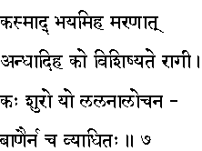
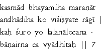

|

|
Verse 7 - Meaning:
Q: What is the root cause of fear for all ?
A:Death (maranam)
Q: Who can be called as blindest of the blind? (andha is blind)
A:That one who is not free from all attachments and who rather sticks to them. (ragi).
Q: Who is the most brave one ? (kah suro)
A:That one who does not fall to the glancing-arrows (the intoxicating looks) of amorous women. (locana - eyes; banam-arrow)
|